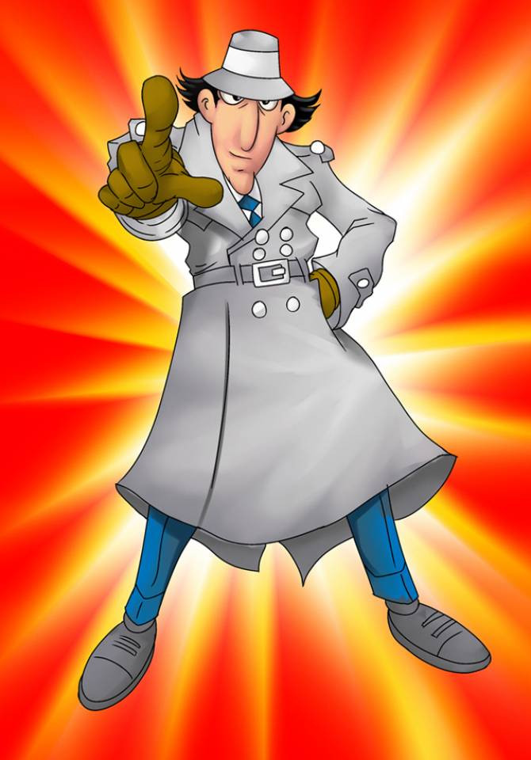

Go Go Gadget Biography!
He's a cyborg police officer who's always on the job and ready for action! Rain or shine nothing will keep him from stopping the evil Dr. Claw.
Go Gadget Go
Gadget's Characteristics
- He summons the gadget he needs by saying "Go go gadget..."
- He loves his job and is always on duty
- He has a niece named Penny
Gadget's Friends and Family
Gadget's friends and family often help him save the day. Click on the links below to read more about them.